Prelab
Before starting the tasks, I installed Bleak on my computer, as I was getting pip errors.
After troubleshooting by restarting the Jupyter notebook, correcting directories, and reinstalling the codebase,
I reset the environment with the correct packages. I also had to grant Bluetooth access to IDE on my computer for the board to connect successfully.
For setting up the virtual environment named FastRobots_ble, I used the following commands provided:
python3 -m pip install --user virtualenv
python3 -m venv FastRobots_ble
Then, I created a folder '4190' to keep all my codes and environments for the class, and activated the BLE virtual environment by sourcing it.
To establish a bluetooth connection with my computer, I updated the Artemis MAC address.
I connected my board, to the Arduino BLE and used ble_arduino.ino to print the MAC address to my serial monitor:
Advertising BLE with MAC: c0:81:19:26:a9:64
Connected to: 3c:6:30:b:ac:c1
I then generated a UUID unique to my computer for secure connection, using the code provided in demo.ipynb:
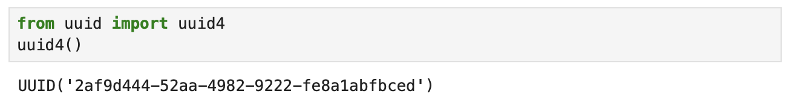
Lastly, I replaced the placeholders in the connections.yaml file with my MAC address and the UUID generated:
artemis_address: 'c0:81:19:26:a9:64'
ble_service: '2af9d444-52aa-4982-9222-fe8a1abfbced'
characteristics:
TX_CMD_STRING: '9750f60b-9c9c-4158-b620-02ec9521cd99'
RX_FLOAT: '27616294-3063-4ecc-b60b-3470ddef2938'
RX_STRING: 'f235a225-6735-4d73-94cb-ee5dfce9ba83'
After completing these steps, I could see the connection was successful.
Codebase
Writeup
Task 1: ECHO command
The ECHO command sends a string from the computer to the Artemis board, which the computer then modifies and sends back.
tx_estring_value adds Robot says -> to the front of the string and appends a
:) at the end of the string, and tx_characteristic_string sends it to the computer.
The following is the Arduino code:
The following is the Python output when the string "Hi" is sent to the board:
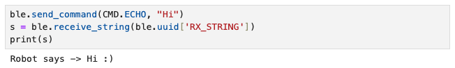
Task 2: SEND_THREE_FLOATS command
The SEND_THREE_FLOATS command sends three floats to the Artemis board, which the computer extracts and sends back.
Like the ECHO command, tx_estring_value modifies the string by appending the floats, and tx_characteristic_string sends it to the computer.
The following is the Arduino code:
The following is the Python output when floats 2.0|-6.0|0.5 are sent to the board:
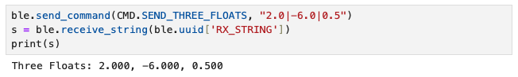
Task 3: GET_TIME_MILLIS command
The GET_TIME_MILLIS command fetches a timestamp of how much time has elapsed since the board was connected, in milliseconds, then creates a string to print containing the information.
the computer then prints.
Since this was a new command, after adding the command to the switch-case chain, I made sure to add it to cmd_types.py and enum CommandTypes.
Same steps were taken for the remaining tasks that require creating a new command. For the two commands above (ECHO and SEND_THREE_FLOATS), this was unnecessary as they already existed in the file.
The following is the Arduino code, in which the timestamp is appended to a string 'T: '
The following is the output printed to the serial monitor when the command is executed:
The following is the Python output after execution, and we can see that the two numbers match, verifying successful transmission.
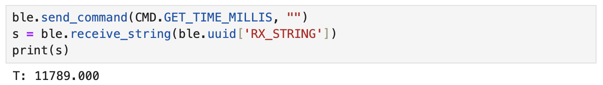
Task 4: Setting Up Notification Handler
To setup a notification handler, I referenced the Member Function table in the demo.ipynb file.
The following shows the Python code for the notification handler and an output of the timestamp extracted.
It is printed as an array of 1 element, since I appended the string to an empty array called times.
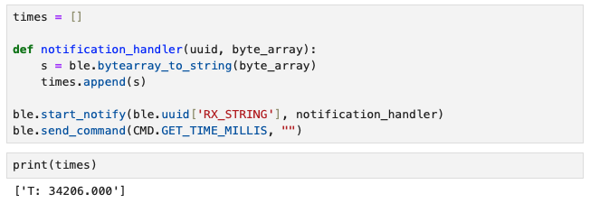
The serial monitor printed out the same timestamp, verifying successful transmission.
There was no new Arduino code, as all we are doing is receiving the string created by the GET_TIME_MILLIS command.
Task 5: Loop to Get Current Time
In the CURRENT_TIME_LOOP command, I used a for loop to retrieve multiple timestamps to be sent to my computer and received by the notification handler.
I defined local variables currentTime and startTime to loop for 5000 milliseconds, and timeCount in order to track each timestamp to monitor how many were sent.
The following is the Arduino code:
The following is the last few lines of output in the serial monitor showing 568 datapoints:
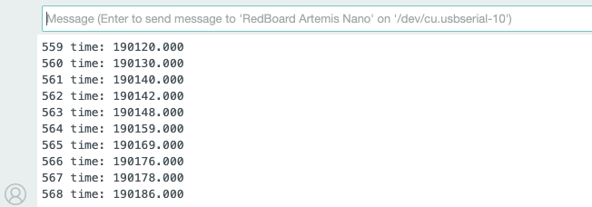
On Python, I printed the number of datapoints from the loop to verify correct data transmission, as printing all datapoints would take up too much space.
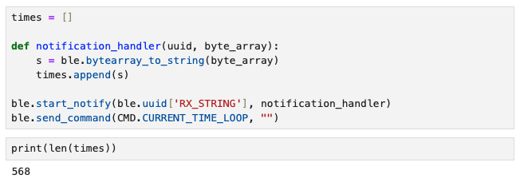
568 messages were sent over 5 seconds, and the effective data transfer rate calculated is around 113.6 messages per second.
One thing I did not consider when writing code for this is the size of each message -- There were 10 of 18 byte messages (single digit timeCount),
89 of 19 byte messages (double digit timeCount), and 469 of 20 byte messages (triple digit timeCount) meaning the actual rate would be slightly different.
Task 6: Setting Up Time Array
As opposed to sending individual messages one by one, the SEND_TIME_DATA command creates an array that stores 1000 timestamps using millis().
The following is the Arduino code:
The first for loop creates and adds 1000 elements to an array called timeArray,
and second for loop appends the data collected to a string to be printed.
The following is the last few lines of output in the serial monitor, where we can see 1000 datapoints were printed:
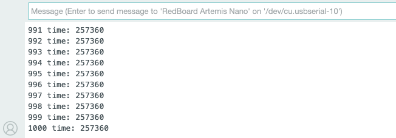
Similar to what I did for Task 5, I printed the length of the array on Python to verify correct data transmission, as printing all datapoints would take up too much space.
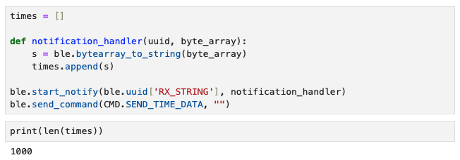
It wasn't captured in the screenshot above, but to calculate the effective data transfer rate, I counted the number of messages sent in a second by looking at the number of strings with the same timestamp.
There were 62 entries of 16 byte messages with the timestamp 257359, so the rate was 62 messages per second, or 992 bytes per second.
Task 7: Setting Up Temperature Array with Time
Like the SEND_TIME_DATA command, GET_TEMP_READINGS command creates an array with 1000 elements using getTempDegF().
The difference is that now the array stores temperature readings in Fahrenheit (very much inferior to Celcius in my opinion), and prints both timestamp and temperature.
In order to achieve this, I created another array called tempArray inside the first for loop, then appended the data to the string in the second for loop.
The following is the Arduino code:
The following is the last few lines of output in the serial monitor, where we can see 1000 datapoints of timestamp and temperature were printed:
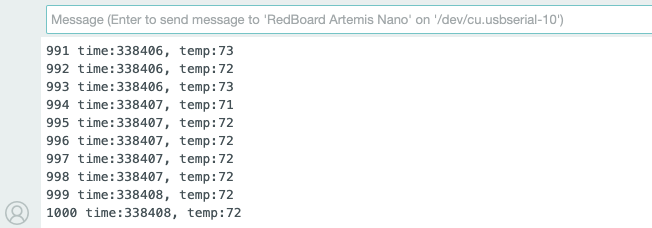
Similar to what I did for Task 5 and 6, I printed the length of the array on Python to verify correct data transmission, as printing all datapoints would take up too much space.
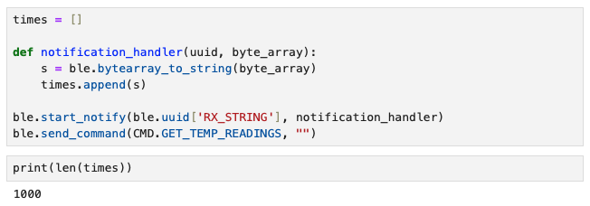
Task 8: Difference Between Methods
Discuss the differences between these two methods, the advantages and disadvantages of both and the potential scenarios that you might choose one method over the other.
How “quickly” can the second method record data? The Artemis board has 384 kB of RAM.
Approximately how much data can you store to send without running out of memory?
Discussion
This lab was a great exercise for me -- as a mechanical engineer with minimal coding background, it was a good level of difficulty to start with.
It was also my first time using GitHub and HTML to create a website. Formatting was a bit tricky in the beginning,
but now I am quite satisfied with how I structured my HTML file and the presentation of my website (mostly thanks to the template). I feel more confident about adding future writeups!
References and Acknowledgements
- Evan Leong, Jeffery Cai, Steven Sun for being a personal TA for a lost mechE student, despite being students themselves
- TA Chenyu Zhang for answering my question on Ed Discussion
- Nila Narayan's website
- ChatGPT for helping me add code to my css file to make small changes to the template
- Bootstrap template for website